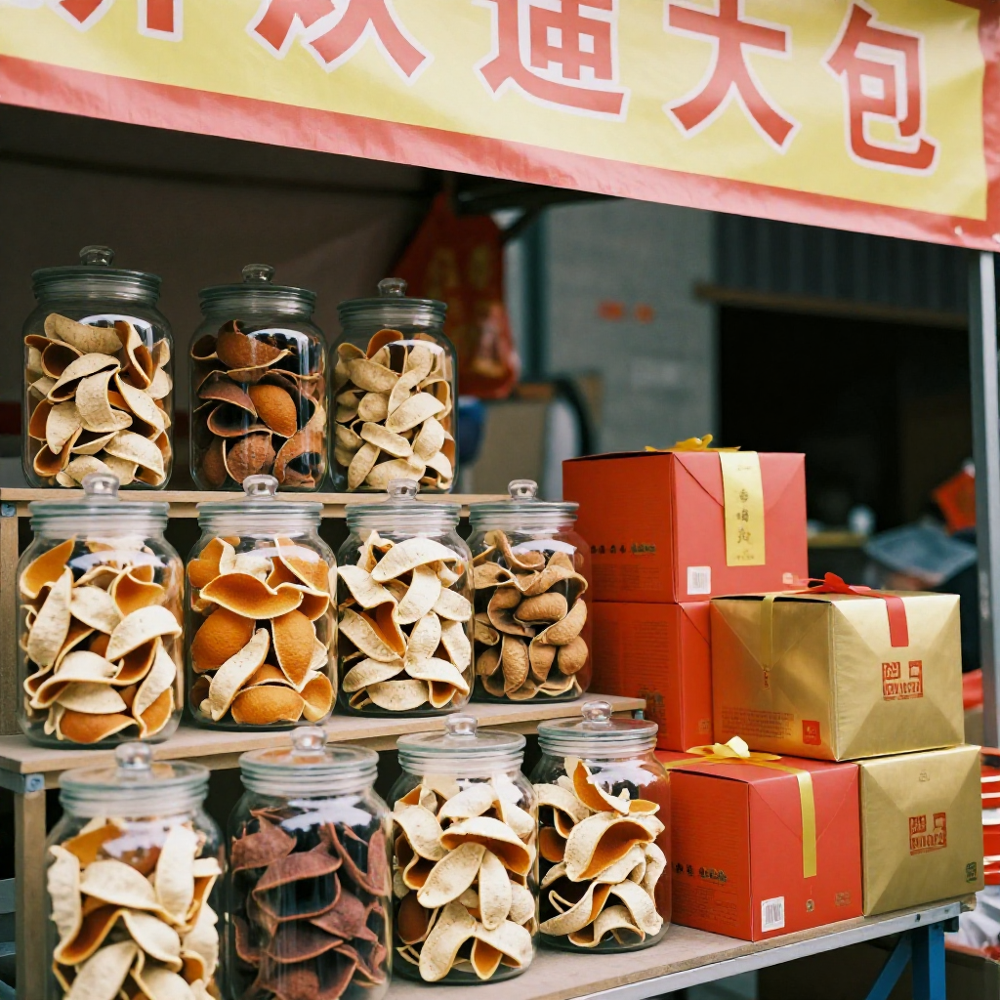
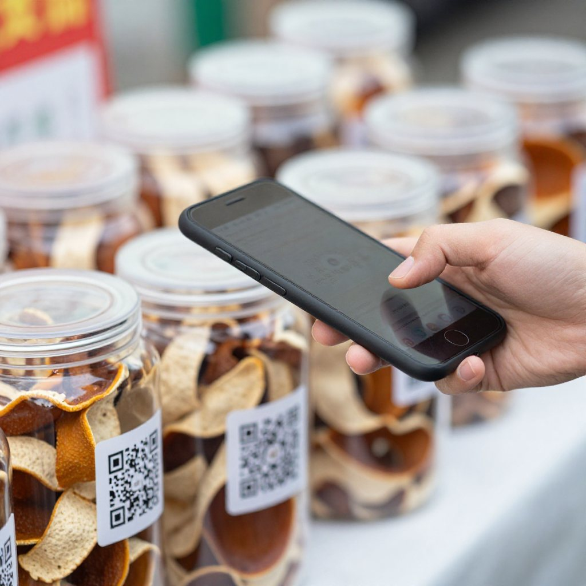
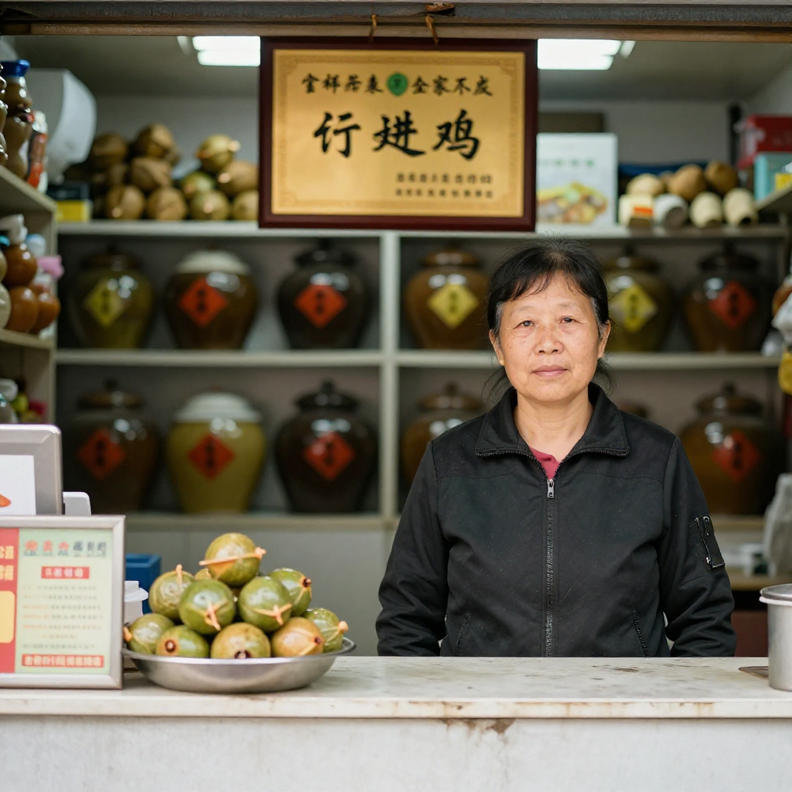
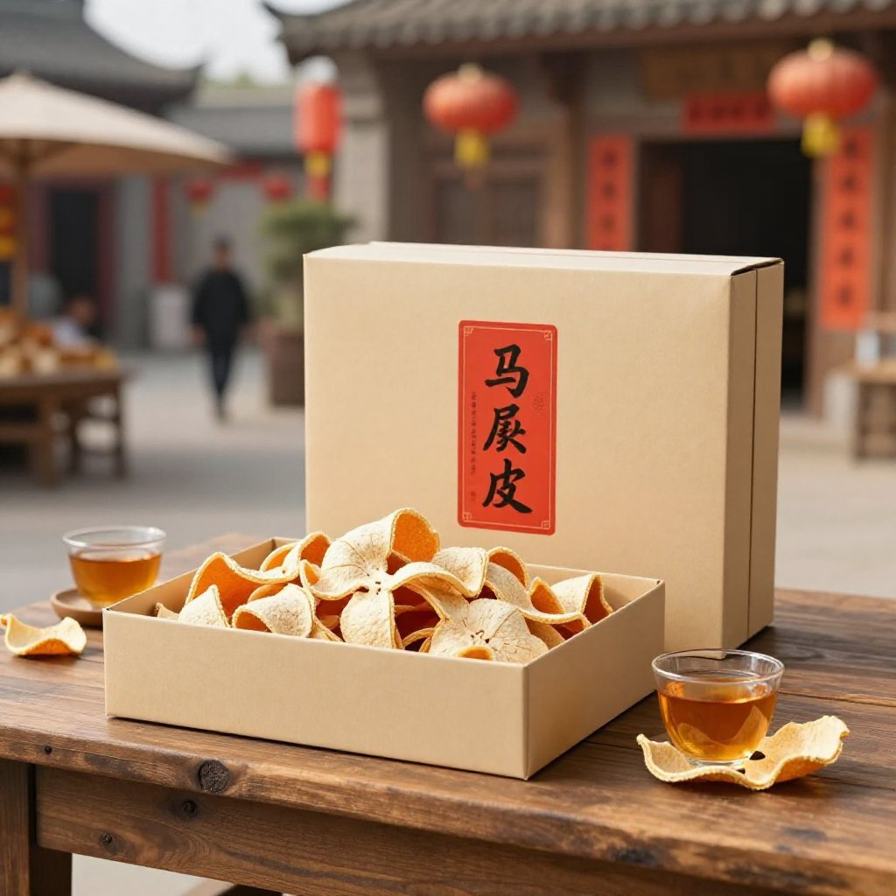

2026陳皮村新會柑農豐收節暨新會陳皮預售季啟動儀式9月28日在新會陳皮村舉行，據南方農村報報道，活動由新會區農業農村局、區市場監督管理局、新會海關綜合技術服務中心等部門代表，以及全國各地渠道商、代理商、金融機構和新會果農、商戶共同參加。
主廣場上，滢滢捧着杯新會柑普茶，看着遠處舞台上的推桿儀式。十三年前她第一次踏進陳皮村，還是個對陳皮一竅不通的外來媳婦；今天站在這裡，她已經是新會陳皮協會裡最願意跟客人「吹水」的講解員之一。
「滢滢，過嚟。今日預售季開幕，你幫我睇住檔口，我要去簽個約。」
霞姐——任霞，就是那個九十年代從外鎮嫁來新會、親眼看着陳皮從「不值錢的尋常物」變成「年貨新寵」的女人。她的傳誠廣商鋪是陳皮村裡最早那批入駐的電商賣家之一，也是京東直播間裡常駐的陳皮供應商。
一、那個「不值錢」的年代

滢滢走進展位，幫霞姐把一罐五年陳的圈枝柑皮擺正。展位上方的橫幅寫着「產業聚勢 共享共贏」，旁邊是今年新設計的預售包裝盒，紅底金字，印着陳皮村的標誌。
「霞姐，你仲記得最早嗰陣嗎？嗰時陳皮真係唔值錢？」
霞姐正在整理貨架上的禮盒，聞言笑了起來。
「何止唔值錢，簡直係廢物。九十年代我啱啱嫁過嚟，我婆婆屋企曬嘅陳皮，一係送親戚，一係掛喺灶台上熏蚊防霉，再多就攞去引火煮飯。嗰時邊個會諗到，呢樣嘢以後可以賣到幾千蚊一斤？」
「我婆婆嗰代人覺得，陳皮呢樣嘢周圍都係，自己屋企曬又唔會壞，但都冇人專門收。嗰時新會本地人都覺得唔稀罕，反而係外地嚟嘅中醫會專門搵，話『廣陳皮』好，但量都唔大。」
滢滢點點頭。這些年她在陳皮村講故事，聽霞姐說過不止一次。每次講到這裡，霞姐都會感慨：「真係時代變喇。」
二、十三年的「四標認證」

舞台那邊傳來主持人的聲音，正在介紹陳皮村「四標認證、全鏈溯源」的體系。霞姐側耳聽了一會兒。
「呢個我熟。」
她說，2013年陳皮村剛開業那會兒，整個新會的陳皮市場還是魚龍混雜：有從外地拉皮來充當新會皮的，有用濕倉加速陳化冒充老皮的，也有在年份上虛標的。買家不懂行，往往吃虧。
「吳村長嗰時就提出『四標認證』，我哋第一批入駐嘅商家其實係有顧慮嘅。你要搞溯源體系，就要我哋每批次果皮都登記——經緯度、採摘時間、開皮日期，一樣都唔少得。我哋嗰時都覺得麻煩。」
「後來呢？」
「後來？後來你就知喇。2019年之後，市場監管越來越嚴，消費者越來越精，嗰種來路不明嘅皮越來越難賣。我哋呢啲老老實實登記嘅，反而訂單越來越多。呢個就係信任嘅價值。」
這份價值現在有了公開的數字。據廣東省政府門戶網站與南方日報報道，江門自2025年12月底啟動為期一年的新會陳皮地理標誌保護專項行動，並明確近20個部門職責分工，構建行政監管、刑事打擊、檢察監督、司法裁判、行業自律、社會共治「六位一體」的保護體系。近三年共出動執法人員6670人次，檢查相關經營主體17861家次，立案查處違法案件255宗，查扣涉案陳皮產品13.5萬斤，罰沒352.74萬元；專項行動以來累計監測線上商品鏈接44萬多條次、店鋪14萬多家次，排查違法違規線索226條。另外，江門還集中銷毀涉案陳皮產品11噸。
三、192家企業的「假一賠二十倍」

更讓霞姐安心的是行業自己的動作。據報道，目前已有192家企業加入新會陳皮誠信聯盟，作出「新會種、新會種、新會陳」的質量承諾，並全面接入溯源體系，公開承諾「假一賠二十倍」。
「你敢寫『假一賠二十倍』，就係將自己嘅招牌擺上檯。以前係買家怕，而家係賣家怕——呢個轉變，我哋等咗十幾年。」
滢滢想起自己剛入行那年，客人問得最多的問題是「怎麼知道你這皮是真的」。而現在她更願意帶客人做另一件事：掃碼。新會陳皮數字化溯源管理系統已經覆蓋正規渠道，掃一掃就能看到生產經營者、生產基地與倉儲環境；今年十月起，區、鎮、村三級幹部還會落田現場核定新會柑鮮果產量，數據一經申報不可更改。
「以前靠口碑，而家口碑加數據。兩樣齊，客人才真的放心。」
四、預售季的第二天：一份五年陳圈枝柑皮

簽完約回來的霞姐，順手拆了一盒今年新設計的預售禮盒，取出一片五年陳的圈枝柑皮遞過來。
「你聞下。圈枝柑嘅油室密，五年開始轉醇，甜香仲喺，但已經有一層木質嘅底。呢個年份最抵飲——再放就貴，而家飲就正。」
滢滢把皮湊近聞了聞，果然先是清甜的柑香，隨後是沉下來的陳香。霞姐說，今年預售季從9月底開始一直賣到十一月，採購商提前鎖定貨源、柑農提前收定金，價格比往年穩。今年8月陳皮村已與6家果圍簽訂2026年新會柑鮮果採購意向協議，計劃收購鮮果1000萬斤；國慶黃金周期間，村裡還設置了十一鎮（街）鮮果展銷區。
「以前最怕豐收——果多就爛市，果少就炒價。而家鎖量鎖價，我哋賣得安心，客人買得放心。」
臨走時，霞姐把展位的燈關掉，回頭看了一眼那面寫着「產業聚勢 共享共贏」的橫幅。她說，十三年前剛進村的時候，鋪位對面還是荒地；現在這裡是國家級現代農業產業園的核心平台，一年接待遊客逾百萬人次。
常見問題
新會陳皮村的「四標認證」是什麼？陳皮村自2013年開業起推行的標準化體系，要求入駐商家對每批次果皮登記產地經緯度、採摘時間、開皮日期等信息，配合標準化倉儲與全鏈溯源，從源頭守住道地品質。
現在買新會陳皮的監管形勢怎樣？據廣東省政府門戶網站與南方日報報道，江門自2025年12月底啟動為期一年的新會陳皮地理標誌保護專項行動，明確近20個部門職責分工，構建「六位一體」保護體系；近三年檢查經營主體17861家次、立案255宗、罰沒352.74萬元，並集中銷毀涉案陳皮產品11噸。
「假一賠二十倍」是什麼承諾？新會陳皮誠信聯盟企業作出的質量承諾。目前已有192家企業加入，作出「新會種、新會種、新會陳」的承諾並全面接入溯源體系，公開承諾假一賠二十倍。
五年陳的圈枝柑皮為什麼被推薦？圈枝柑油室密集，五年左右香氣開始轉醇，甜香仍在、又添一層木質底韻，價格尚未進入老皮區間，是日常飲用性價比高的年份。
今年的預售季怎麼運作？8月陳皮村已與6家果圍簽訂鮮果採購意向協議，計劃收購1000萬斤；預售季自9月底延續至11月，採購商提前鎖定貨源、柑農提前收定金，實現鎖量鎖價。
國慶假期來陳皮村看什麼？國慶黃金周期間村裡設有十一鎮（街）鮮果展銷區，可近距離比較不同產區柑果；南門牌坊G04滢滢姐的店裡常年備着熱茶，可當面看皮、免費試喝。
結語
霞姐那句「以前係買家怕，而家係賣家怕」，說的就是這十三年最實在的變化：從沒人管，到有標準、有溯源、有聯盟、有賠付承諾。信任不是一句口號，是一批一批登記出來的。
想親自掃一次溯原始碼、比一比不同產區的皮，來新會陳皮村南門牌坊G04找滢滢姐坐坐，店裡常年備着熱茶。想看今年豐收節與預售季的完整現場，看這篇《豐收節裡的陳皮情》；想學會四步辨真假，翻翻這篇《十年陳皮一場夢：新會陳皮四步辨真假》。
下期預告：十一月預售季進入尾聲，滢滢姐會跟着霞姐去一趟她的老倉庫，把五年、十年、十五年三種皮擺在一起，從油室、湯色到回甘做一次橫向實測——同一間鋪，三罐皮，差別一眼看得出來。